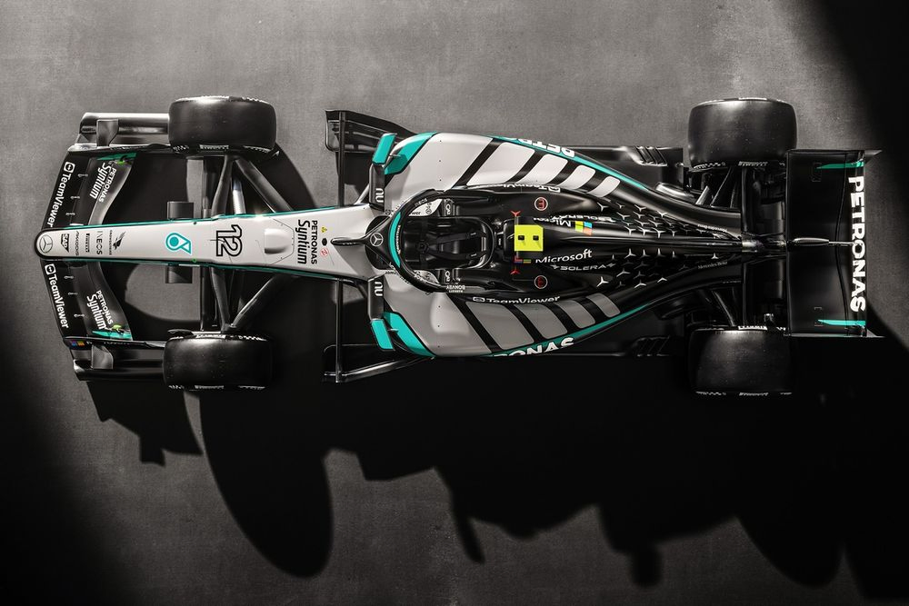
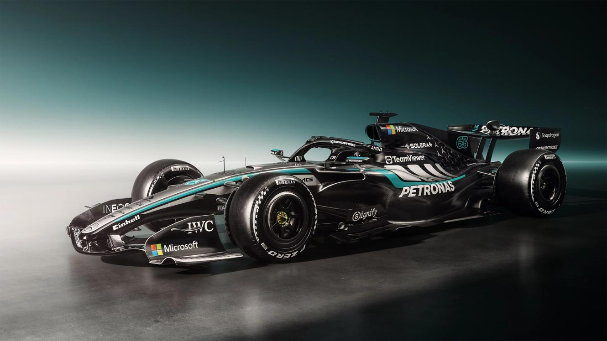
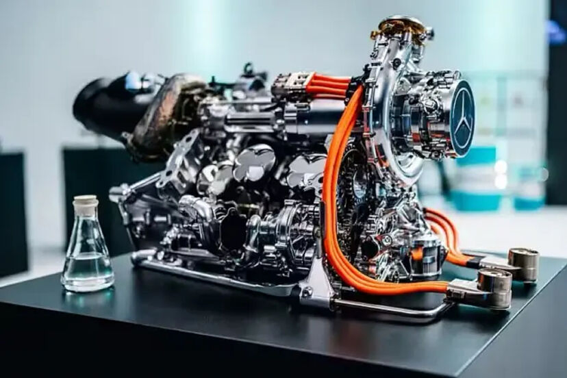

Η Mercedes δεν μπήκε στη σεζόν του 2026 με τη λογική της προσαρμογής. Η W17 δεν είναι προϊόν εξέλιξης, ούτε προσπάθεια διόρθωσης προηγούμενων λαθών. Είναι ένα μονοθέσιο που σχεδιάστηκε εξ αρχής για να λειτουργήσει μέσα σε ένα εντελώς διαφορετικό περιβάλλον κανονισμών, όπου η ισορροπία μεταξύ ενέργειας, αεροδυναμικής και μηχανικής συμπεριφοράς αλλάζει ριζικά.
Το αποτέλεσμα είναι ένα αυτοκίνητο που δεν προσπαθεί να είναι ακραίο σε έναν τομέα, αλλά να λειτουργεί ως ένα πλήρως ενοποιημένο σύστημα. Αυτό είναι και το βασικό στοιχείο που ξεχωρίζει τη W17 από τις περισσότερες προσεγγίσεις που έχουμε δει μέχρι τώρα.
Ένα μονοθέσιο σχεδιασμένο γύρω από τη μείωση όγκου
Η πρώτη εντύπωση που δίνει η W17 είναι ότι πρόκειται για ένα “σφιχτό” αυτοκίνητο. Οι νέοι κανονισμοί οδήγησαν έτσι κι αλλιώς σε μικρότερα και ελαφρύτερα μονοθέσια, όμως η Mercedes δεν περιορίστηκε σε αυτό. Προχώρησε σε μια πιο επιθετική μείωση όγκου, με στόχο να φέρει όσο το δυνατόν περισσότερη μάζα κοντά στο κέντρο του αυτοκινήτου.
Αυτό αλλάζει δύο βασικά πράγματα. Πρώτον, μειώνει την αδράνεια στις αλλαγές κατεύθυνσης. Δεύτερον, επιτρέπει στην αεροδυναμική να λειτουργεί πιο σταθερά, γιατί το αυτοκίνητο παρουσιάζει λιγότερες μεταβολές στη στάση του κατά την επιτάχυνση και το φρενάρισμα.
Η επιλογή αυτή δείχνει ότι η Mercedes δεν κυνηγά απλώς peak απόδοση, αλλά ένα πιο ελεγχόμενο και προβλέψιμο platform, πάνω στο οποίο μπορούν να “χτίσουν” όλα τα υπόλοιπα συστήματα.

Η σημασία της ενοποίησης: chassis, ενέργεια και θερμοκρασία
Στη W17, τίποτα δεν φαίνεται να έχει σχεδιαστεί απομονωμένα. Το chassis, το power unit και τα συστήματα ψύξης λειτουργούν ως ένα ενιαίο σύνολο.
Αυτό είναι ιδιαίτερα σημαντικό στη νέα εποχή της Formula 1, όπου η ισχύς μοιράζεται σχεδόν ισόποσα μεταξύ θερμικού κινητήρα και ηλεκτρικού συστήματος . Η διαχείριση ενέργειας δεν είναι πλέον απλώς θέμα deployment, αλλά επηρεάζει άμεσα τη θερμοκρασία, την απόδοση και τη σταθερότητα του αυτοκινήτου.
Η Mercedes φαίνεται να έχει επενδύσει πολύ στο να ελέγχει αυτό το τρίπτυχο. Η θερμική σταθερότητα γίνεται κρίσιμη, γιατί επηρεάζει όχι μόνο την αξιοπιστία αλλά και την απόδοση του MGU-K και των μπαταριών. Σε έναν αγώνα, αυτό μπορεί να κάνει τη διαφορά μεταξύ ενός αυτοκινήτου που πιέζει μέχρι το τέλος και ενός που αναγκάζεται να “ρίξει” ρυθμό.
Αεροδυναμική χωρίς υπερβολές — αλλά με στόχο τη σταθερότητα
Σε αντίθεση με άλλες ομάδες που δείχνουν να κυνηγούν ακραίες λύσεις στο bodywork, η Mercedes φαίνεται να έχει ακολουθήσει μια πιο ελεγχόμενη προσέγγιση.
Το πίσω μέρος του μονοθεσίου είναι λιγότερο επιθετικό σε ό,τι αφορά τη διοχέτευση του αέρα προς το diffuser, με πιο ομαλή μετάβαση του αμαξώματος. Αυτό υποδηλώνει ότι η ομάδα δεν βασίζεται σε πολύ narrow operating window, αλλά θέλει ένα πιο “συγχωρητικό” αυτοκίνητο.
Ταυτόχρονα, υπάρχουν λεπτομέρειες που δείχνουν ότι η Mercedes έχει ψάξει πολύ βαθιά τα όρια των κανονισμών. Το slot στο diffuser, για παράδειγμα, είναι μια λύση που μπορεί να αυξήσει την κάθετη δύναμη χωρίς σημαντική αύξηση της αντίστασης . Αν λειτουργήσει όπως αναμένεται, τότε δίνει στην ομάδα ένα σημαντικό πλεονέκτημα χωρίς τα μειονεκτήματα μιας πιο επιθετικής αεροδυναμικής φιλοσοφίας.

Η μετάβαση στην ενεργή αεροδυναμική
Το 2026 σηματοδοτεί το τέλος της εποχής του DRS όπως το γνωρίζαμε. Η W17 είναι ένα από τα πρώτα μονοθέσια που έχουν σχεδιαστεί πλήρως γύρω από την ιδέα της ενεργής αεροδυναμικής.
Οι πτέρυγες δεν λειτουργούν πλέον σε δύο καταστάσεις, αλλά προσαρμόζονται συνεχώς, μειώνοντας την αντίσταση στις ευθείες και αυξάνοντας την κάθετη δύναμη στις στροφές.
Αυτό αλλάζει τη φύση της απόδοσης. Το ζητούμενο δεν είναι να έχεις το καλύτερο setup για ένα συγκεκριμένο κομμάτι της πίστας, αλλά να μπορείς να προσαρμόζεις το αυτοκίνητο σε κάθε φάση του γύρου. Η Mercedes φαίνεται να έχει κατανοήσει αυτό το transition καλύτερα από πολλούς ανταγωνιστές.

Power Unit: το νέο σημείο ισορροπίας
Η πιο θεμελιώδης αλλαγή στη W17 βρίσκεται στο power unit. Η σχεδόν ισομερής κατανομή ισχύος μεταξύ θερμικού και ηλεκτρικού συστήματος αλλάζει πλήρως την αρχιτεκτονική του μονοθεσίου .
Η απουσία του MGU-H απλοποιεί το σύστημα, αλλά ταυτόχρονα αυξάνει την πίεση στο MGU-K και στη διαχείριση ενέργειας. Η Mercedes, έχοντας τεράστια εμπειρία από την προηγούμενη hybrid εποχή, φαίνεται να έχει επενδύσει ακριβώς σε αυτό το σημείο.
Η απόδοση πλέον δεν είναι μόνο θέμα ιπποδύναμης, αλλά το πόσο αποτελεσματικά μπορείς να διαχειριστείς την ενέργεια μέσα στον γύρο. Αυτό επηρεάζει άμεσα το πώς επιτίθεσαι, πώς αμύνεσαι και πώς διατηρείς ρυθμό σε long runs.
Data και simulation: το αόρατο πλεονέκτημα
Αν υπάρχει ένας τομέας στον οποίο η Mercedes παραδοσιακά υπερέχει, αυτός είναι η αξιοποίηση δεδομένων. Στη W17, αυτό φαίνεται να έχει φτάσει σε άλλο επίπεδο.
Το μονοθέσιο λειτουργεί με εκατοντάδες αισθητήρες και τεράστιο όγκο δεδομένων που επιτρέπουν στην ομάδα να κατανοεί τη συμπεριφορά του αυτοκινήτου σε εξαιρετικό βάθος.
Αυτό δεν είναι απλώς εργαλείο ανάλυσης. Είναι βασικό κομμάτι της απόδοσης. Σε ένα περιβάλλον όπου όλα τα συστήματα είναι αλληλοεξαρτώμενα, η ικανότητα να κατανοείς τι συμβαίνει και να αντιδράς γρήγορα γίνεται καθοριστική.
Η πρώτη εικόνα στην πίστα
Τα πρώτα δείγματα δείχνουν ότι η Mercedes έχει ξεκινήσει από πολύ ισχυρή βάση. Το μονοθέσιο έχει εμφανίσει καλή συσχέτιση μεταξύ simulation και πραγματικής απόδοσης, κάτι που συνήθως αποτελεί ένδειξη σωστής θεμελίωσης του project.
Ακόμη πιο σημαντικό είναι ότι η απόδοση της W17 δεν φαίνεται να εξαρτάται αποκλειστικά από τον κινητήρα, αλλά από το συνολικό package του αυτοκινήτου . Αυτό είναι ίσως το πιο ενθαρρυντικό στοιχείο για την ομάδα.
Η Mercedes W17 είναι ένα μονοθέσιο που δεν προσπαθεί να κερδίσει με μία ιδέα, αλλά με την αλληλεπίδραση όλων των συστημάτων του.
Σε μια εποχή όπου οι κανονισμοί αλλάζουν ταυτόχρονα την αεροδυναμική, την ενέργεια και τη συνολική φιλοσοφία σχεδιασμού, η Mercedes φαίνεται να έχει επιλέξει τη δύσκολη αλλά πιο ολοκληρωμένη διαδρομή.
Αν αυτή η προσέγγιση αποδώσει, τότε η W17 δεν θα είναι απλώς ανταγωνιστική. Θα είναι το αυτοκίνητο που θα ορίσει το πώς πρέπει να σχεδιάζεται ένα μονοθέσιο στη νέα εποχή της Formula 1.


Comments